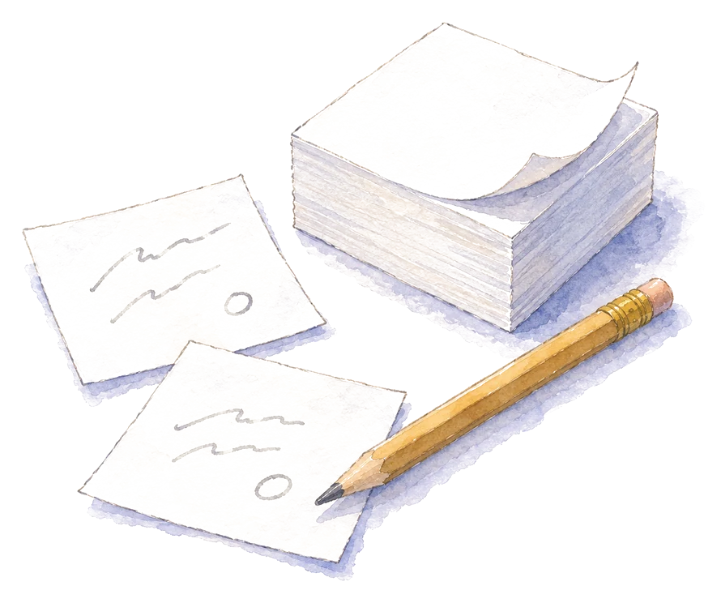
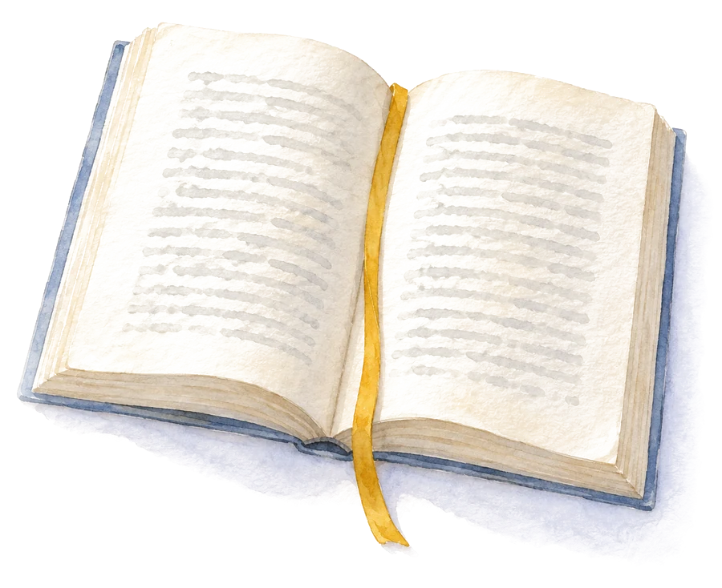
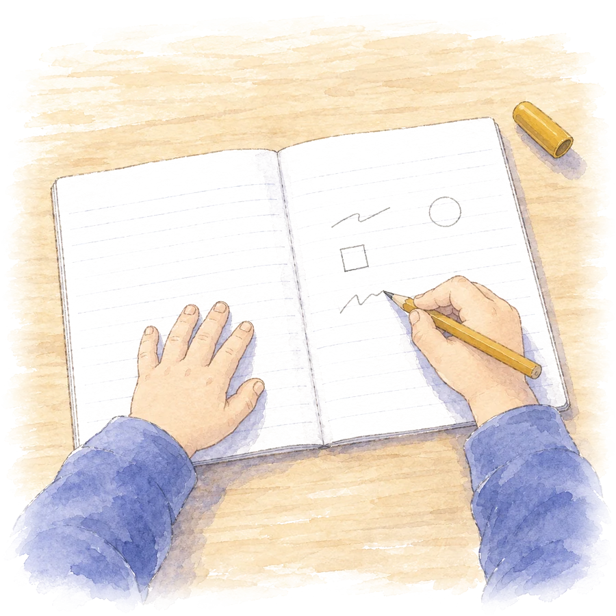

0はじめに ブロックメモと3時間
ある日、紙とペンだけで2時間、3時間と考え続けたことがありました。 パソコンも開かず、生成AIにも聞かない。手元にあるのはブロックメモと鉛筆だけ。 すると、画面に向かっているときよりずっと、考えが整理されていきました。 脳が汗をかいているような感覚で、それが心地よかった。 通知は来ない。書いた紙は机の上に並んでいて、いつでも見返せる。 「紙って、いいな」と、あらためて思いました。
同じころ、紙の本のほうが賢くなる、と語る脳科学者の話を動画で見ました。 感覚としては分かる。でも、担任としては感覚のままにしておけません。 子どもたちに「ノートに書きなさい」と言い、ワークシートを配っているのは私です。 ノートは考えを整理する道具のはずなのに、書かない子がいる。あれはなぜなのか。 ワークシートには、何を書かせるのがよいのか。紙と画面で、本当に頭の中の出来事は違うのか。 そこで、感覚を5つの問いに直して、論文を読みに行くことにしました。
- 言葉の認識 人は文字と言葉をどう認識しているのか。手で書くことは、その認識にどう関わるのか
- 思考の整理 考えを整理するとき、頭の中で何が起きているのか。紙に出すことの働きは何か
- 関係づけ 情報と情報が結びつくのは、どんなときか。ぼんやりする時間や、通知のない環境の意味は何か
- 媒体の違い 紙と画面、手書きとタイピング、自分の頭と生成AIで、読む・書く・考えるは何が違うのか
- 教室への含意 ワークシートに何を書かせるべきか。子どもがノートを書かない理由は何か
読んだのは、J-STAGEとCiNiiにある日本の論文と、海外の論文をあわせて110本あまりです。 すべて、著者・年・題名・掲載誌をデータベースで確認したものだけを使っています。 そして大事なことをひとつ先に書いておきます。 「紙のほうが良い」と単純に言える結果には、なりませんでした。 手書きの優位を示した有名な研究が、追試で再現しなかった例もあります。 代わりに見えてきたのは、「頭の中に何を起こしたいか」によって、紙と画面、手書きとタイピングの向き不向きが決まる、という地図でした。 以下、問いの順に歩きます。長い読み物です。気になる章から読んでください。
1頭の中の作業台は狭い

最初に押さえたいのは、人が「今ここで」考えるために使える作業台の広さです。 この作業台を、心理学ではワーキングメモリと呼びます。 1956年のミラーの論文は「7±2」という数で有名ですが、ミラー自身は固定の容量を主張したわけではありません。 復唱やまとめ直しを封じた「純粋な」条件で測り直したカウワン（2001）は、平均して約4つ、3〜5個が限界だと結論しました。 同時に手に持てる情報の塊は、それしかない。 バドリー（2000、2012）の整理では、この作業台には「音でつぶやいて保つ場所（音韻ループ）」「絵や位置で保つ場所（視空間スケッチパッド）」、そしてそれらを束ねて長期記憶とつなぐ「エピソディック・バッファ」があるとされています。
この狭さが、「考えがまとまらない」の正体の多くを説明します。 スウェラー（1988）は、初心者が問題を解くときに使う「目標と今の状態の差を埋めようとするやり方（手段目標分析）」が、目標・現状・差・小目標を同時に抱え込むため、作業台を占領して学びを妨げると示しました。 ここから育ったのが認知負荷理論です。 スウェラーらの1998年の総説では、負荷を「課題そのものの難しさ（内在的）」「教材の見せ方で生まれる余計な負荷（外在的）」「理解の型をつくるための負荷（学習関連）」の3つに分けました。 2019年の「20年後」の総説では、この3つを足し算で語る枠組みは見直され、同時に処理しなければならない要素の数（要素間相互作用性）が負荷の源だと中心に据え直されています。
私の3時間に当てはめると、こうなります。 頭の中だけで考えているとき、私は「今考えていること」「さっき思いついたこと」「まだ決めていないこと」を全部作業台に載せようとしていました。 4つしか載らない台に、10個載せようとしていた。 紙に1枚ずつ書き出すと、台の上には「今書いている1枚」だけが残ります。 残りは机の上にあって、いつでも取り戻せる。 「脳が汗をかく」と感じたのは、負荷が増えたからではなく、余計な負荷が消えて、本来の難しさに全部の力を向けられたからだったのだと思います。 2019年の総説の言葉を借りれば、負荷を減らすことが目的なのではなく、要素どうしの関係を扱える形に整えることが目的なのです。
4つしか載らない作業台に 10個載せようとしていた紙は、作業台を広げるのではなく、台から下ろす場所をつくる
2文字はどう認識されているか
1つ目の問いに入ります。人は文字と言葉をどう認識しているのか。 英語圏の研究では、文字列から音への変換に「単語をまるごと引く道」と「つづりと音の規則で組み立てる道」の2本があるとする二重経路モデル（Coltheart ら 2001）と、つづり・音・意味の3つを結ぶネットワークが統計的に学習するとするトライアングルモデル（Seidenberg & McClelland 1989）が、長く論争を続けてきました。 どちらの立場でも共通しているのは、文字を「見た」だけでは認識は終わらないということです。音と意味が動いて、初めて言葉になります。
読む脳は借り物の脳
脳の側では、左半球の下のほう、後頭葉と側頭葉の境目に「視覚的単語形態野」と呼ばれる場所があります（Cohen ら 2000）。 ドゥアンヌとコーエンは、この領域がもともと物や顔を見分けるための皮質を「再利用」して読みに使われるようになったのだ、という仮説を立てました（2007、2011）。 文字を読む能力は数千年の歴史しかなく、進化の産物ではありません。 人類は、あるものを使い回して読めるようになった。 ですから、読むことは自然に身につく能力ではなく、脳を作り変える練習の結果です。これは、入門期の子どもを見るときの前提になります。
漢字とかなは重みの違う2つの道で読まれる
日本語には、この話をさらに面白くする事情があります。漢字とかなです。 神経内科医の岩田誠は1984年に、漢字は意味へ向かう腹側の回路、かなは音へ向かう背側の回路が主に担うという「漢字・仮名二重回路」の仮説を出しました。 その後の画像研究では、櫻井らのPET（2000）で漢字とかなの音読時に活動する場所が違うこと、中村らのfMRI（2005）で表記ごとに違う領域と、表記をまたいで意味で合流する領域があることが示され、「完全に別の回路」ではなく「重みの違い」として修正されています。
では、漢字を読むとき、頭の中で音は鳴っているのか。ここは研究者の間でも結果が割れています。 Chen・玉岡ら（2007）は漢字どうしでは同音のプライミングが出ないと報告しましたが、水野（1997）は漢字語でも音韻処理が自動的に起きていることを示し、楠瀬ら（2013）も漢字熟語で同音語プライミングを観察しました。 「漢字は音を経ない」とも「必ず経る」とも言い切れない、というのが誠実なまとめです。 ただ、少なくとも子どもが漢字語を読むときに、音でつぶやいて確かめる道は生きている。音読が効くのはここに根があります。
文字を見ると書くための脳が動く
ここからが、手で書くことと認識の結びつきです。 ロンカンらは2003年に、文字を「見るだけ」で、左の運動前野の、実際に字を書くときに働く場所が活動することを示しました。 書いたことのない擬似文字では、その場所は動きません。 ジェームズとゴーティエ（2006）も、文字を見るだけで運動に関わる領域が、書くときに文字専用の視覚領域が動くという、双方向の巻き込みを報告しています。 文字の記憶は、視覚だけでなく、手の運動の記憶と一体になって蓄えられているということです。
この結びつきは、覚え方で変わります。 ロンカンら（2005）は3〜5歳児76名を手書き群とタイピング群に分け、3週間練習させました。 年長の子では、手書きで練習した群のほうが文字の見分けが良かった。 成人に未知の文字を学ばせた2008年の研究でも、手書きで学んだ文字は鏡文字との区別が正確で、その差は数週間続き、fMRIではその文字を見たときに運動に関わる領域がより強く活動していました。 ジェームズとエンゲルハート（2012）は5歳児15名で、文字を見たときに「読みの回路」が動員されたのは手書きで練習した後だけで、タイピングやなぞり書きの後には見られなかったと報告しています。 日本でも、情報通信研究機構の井原ら（2021）が、日本語話者33名に未知の外国語を紙のペン・タブレットのペン・キーボードで学ばせ、手書きで学んだ語のほうが意味処理を示す脳波（N400）の効果が大きかったことを示しました。
1つ目の問いへの答えは、こうなります。 文字の認識は、見る・音にする・手で書くの3つが絡み合ってできている。 だから、手で書いた文字は「見た文字」より多くの道で脳に結びつく。 紙に書いて考えていた私は、言葉を目で見るだけでなく、手で作り、（たぶん小さく）口の中で音にしていた。3本の道を同時に使っていたわけです。
3紙に出すと 思考そのものが変わる
2つ目の問い。考えを整理するとき、何が起きているのか。 1章で見たように、作業台は狭い。では紙は、単に「覚えておく場所」なのでしょうか。 認知科学の答えは、それ以上です。外に出した表象は、思考のやり方そのものを変える。
頭で回すより手で回す
カーシュとマグリオ（1994）は、テトリスの熟達者ほど、置く位置を決めるために必要以上にピースを回転させることに気づきました。 頭の中で回して考えるより、外で動かして確かめるほうが速く確実だからです。 彼らはこれを、目標に近づくための「実用的行為」と区別して「認識的行為」と呼びました。 張とノーマン（1994）は、ハノイの塔と同じ構造の問題で、ルールのうち何個を物の形で外に置くかを変えました。 外に表現されたルールが多いほど、解決は速く、誤りは少なかった。 外部の表象は、次にできる操作を制約し、何を見るべきかを直接与えるので、思考の性質そのものが変わる、と彼らは結論しています。 ハッチンス（1995）が旅客機のコックピットで見たものも同じでした。着陸速度の記憶は、パイロット個人の頭にではなく、速度計に付ける目印やカードや声出し確認を含めた「系全体」にあった。
哲学者のクラークとチャーマーズ（1998）は、これを「拡張された心」と呼びました。 常に持ち歩き、自動的に信頼し、すぐ取り出せるノートは、その人の記憶の一部と見なしてよい、という主張です。 賛否の分かれる議論ですが、机の上に並んだブロックメモは、私の思考の外にある記録ではなく、思考の一部だった、という私の実感には、こういう名前がついていました。
描いたものが返事をしてくる
ここで設計やデザインの研究に寄り道します。 諏訪正樹とトヴァスキー（1997）は、建築家と建築学生に設計スケッチを描かせ、あとでビデオを見ながら何を考えていたかを語ってもらいました。 熟達した建築家は、自分の描いたスケッチから、描いたときには意図していなかった関係を「読み取り」、それを次の案に使っていました。 ゴールドシュミット（1991）はこれを「〜として見る」と「〜であると見る」の往復と呼び、ショーンは「状況からの返事（backtalk）」と呼びました。 描いた形が、想像を超えた情報を返してくる。それを見て、次の一手が決まる。
トヴァスキー（2011）の総説は、人が抽象的な関係を空間の関係に写して考えること、紙の上の配置・線・矢印が、記憶の負担を下げるだけでなく、要素を並べ替えて関係を発見する足場になることを整理しています。 ブロックメモが良かった理由が、ここでひとつ分かります。 1枚に1つ書いた紙は、並べ替えられる。ノートの1ページに上から順に書いたものは、並べ替えられない。 紙が返事をしてくるためには、動かせる形で外に出ている必要があるのです。
書くことは学ぶこと
教室に近い研究に戻ります。 フィオレラとメイヤー（2016）は、学習を高める8つの「生成的な」方略を整理しました。要約する・図に写す・描く・想像する・自分をテストする・自分で説明する・人に教える・動作で表す。 どれも、与えられたものを受け取るだけでなく、自分の中から何かを生み出す活動です。 チーとワイリー（2014）のICAPという枠組みは、学習活動を「受動的＜能動的＜構成的＜対話的」の4段に並べ、この順に学びが深いと予測しました。 自分の言葉でノートを書く・概念図を描く・自分で説明する、といった「材料を超える出力」を生む活動は「構成的」に入ります。 黒板を写すだけのノートは「能動的」止まりで、そこに差が生まれます。
自己説明の効果は、チーら（1989）が発見し、1994年の実験で因果が確かめられました。 中学2年生に循環器系の文章を読ませ、1文ごとに「これはどういうことか」を自分に説明させた群は、2回読んだ群より理解が深まり、特に文章に直接書かれていない深い問いで差が出ました。 日本でも、伊藤・垣花（2009）が、聞き手のいる場で説明した群のほうが「自分の言葉で意味づけ直す説明」を多く生み、成績も高かったことを示しています。 深谷（2011）は中学生に「仕組み・機能」という観点を与えた自己説明の訓練を行い、観点があるほうが働きやすいことを示しました。
そして、ひとつ大事な注意があります。 植阪（2009）は、生徒は授業で図表の使い方を見せられていても、自分では図表を使わない、と指摘しています。 清河（2002）や清河・伊澤・植田（2007）の実験は、自分の試行を別の目で評価する分業が見方の切り替えを起こすことを示しました。 三宅なほみ（1986）は、理解が一度で完成せず、説明しようとして自分の理解の穴に気づく反復の過程だと描いています。 つまり、「書いて考える」は、見せただけでは自発的には使われない。型を渡し、観点を与え、書いたものを見返す場面まで含めて、初めて思考の整理として働きます。
2つ目の問いへの答え。 紙に出すと、作業台が空くだけではありません。 出したものが次の操作を制約し、意図しなかった関係を返してきて、自分の理解の穴を見せてくれる。 それを見て次を書く。この往復が、私が3時間やっていたことでした。
4情報と情報が結びつくとき

3つ目の問い。情報と情報が結びつくのは、どんなときか。 「関連づけて考える」は指導案にもよく出る言葉ですが、頭の中で何が起きているのかは、あまり語られません。 記憶研究の答えは、はっきりしています。見た回数や費やした時間ではなく、意味を問い、自分で生み出し、思い出そうとしたときに結びつきます。
意味を問い 自分で作り 思い出す
クレイクとタルヴィング（1975）の10の実験では、単語について「大文字か」「韻を踏むか」「文に当てはまるか」と問いの深さを変えると、意味を問われた単語ほど記憶に残りました。 かかった時間や努力量をそろえても差は残ります。効いているのは処理の質です。 スラメッカとグラフ（1978）は、読んだ語より自分で生成した語のほうが一貫して記憶に残ることを示しました（生成効果）。 レディガーとカーピキ（2006）は、文章を再学習する群と思い出すテストをする群を比べ、5分後は再学習群が上でも、1週間後はテスト群がはっきり上回ることを示しました。 しかも学習者自身は、再学習のほうが覚えたと感じていた。手ごたえと実際は、逆を向くことがある。
2つ並べて共通点を自分の言葉で書く
別々の知識がつながる最短の手続きを示したのが、ギックとホリオーク（1980、1983）です。 「将軍が軍を小分けにして要塞を四方から攻める」物語を読んだあとに、「腫瘍に弱い放射線を四方から当てる」問題を解かせても、ヒントなしでは約3割しか気づきません。 ところが、似た物語を2つ読んで共通の構造を自分で書き出した群だけ、ヒントなしの転移がはっきり上がりました。1例だけでは転移しない。2例を見せるだけでも足りない。比較して、共通点を言葉にする作業が鍵でした。 ゲントナー（1983）の構造写像理論が言うように、写るのは見た目ではなく関係の構造です。 植阪（2010）の事例研究で、解いた問題から「何が学べたか」を自分の言葉でまとめる「教訓帰納」が別の教科にまで転移したのは、この授業版だと読めます。
そして枠組みは「先に」置く必要があります。 ブランスフォードとジョンソン（1972）は、意味の取りにくい文章に「洗濯」という題名を先に与えた群だけが理解も再生も高く、後から題名を与えても回復しないことを示しました。 情報は、入ってくるときに既有の枠と結びつかなければ、残りにくい。導入で先に枠を置く意味は、ここにあります。
努力感は学べていない信号ではない
「脳が汗をかく」感覚に戻ります。あれは何だったのか。 ビョークとビョーク（2011）は、分散・交互練習・思い出す練習・生成など、学習中の成績や手ごたえを下げる操作が、長期の保持と転移を上げることを「望ましい困難」と名づけました。 学習者は「今できる」感覚で判断するので、望ましい困難を避けやすい。 クールら（2010）は、報酬に差がなくても人は認知的な要求の少ないほうを選ぶことを示し、日本でも佐藤（1998）が、有効だと分かっていても手間が高いと感じる学習方略は使われないこと、吉田・村山（2013）が中学生の「どの方略が効くか」の認識が専門家とずれていることを示しています。 一方でインツリヒトら（2018）は「努力の逆説」を整理しました。人は努力を避けるのに、努力した成果や努力そのものに価値を置く。 シェンハブら（2017）の見方では、努力感は「資源が減った」信号というより、認知の制御をどこに配分するかを決める計器です。
この線で読むと、私の3時間はこうなります。 努力感が続いていたのは、結びつきを作っている途中の信号だった。 そして心地よかったのは、その困難が、私の準備で乗り越えられる範囲にあったから。 ビョークらが2020年に強調したように、望ましい困難は、応えられる背景知識がある人にだけ望ましい。 同じ「紙で3時間」を、準備のない子どもに渡せば、ただの苦行になります。
ぼんやりする時間は条件つきで効く
「散歩していたら思いついた」という経験は誰にもあります。 問題をいったん置く「インキュベーション」の効果は、シオとオーマロッド（2009）のメタ分析で確認されました。 効果は中程度以下ですが本物で、発散的な課題で大きく、準備をしっかりしたあとほど効き、休止中に重い課題を入れると効かない。 脳の側では、課題をしていないときに活動する「デフォルトモードネットワーク」（Raichle ら 2001）が、心のさまよい（Mason ら 2007）や自発的思考（Christoff ら 2016）と結びつけられ、ビーティら（2016）は創造的思考の最中にこのネットワークと評価を担う実行制御のネットワークが「協調」して働くことを示しました。 ぼんやりだけでも、集中だけでもなく、行き来が鍵です。
通知は触らなくても注意を削る
最後に、通知のない環境について。 ストサートら（2015）は、注意を持続させる課題の最中に、実験と知らせないまま着信やメッセージの通知を送りました。 端末に触れなくても、通知を受けただけで成績が有意に下がり、その大きさは実際に通話やメッセージを使っているときの妨害と同程度でした。 ルロワ（2009）は、前の仕事を終えないまま切り替えると「注意の残り」が生じ、次の仕事の成績が下がることを示しています。 モンセル（2003）の総説が整理する課題切り替えのコストや、マークら（2008）が示した「中断されると速く働いて埋め合わせ、ストレスと努力感で代償を払う」という結果も、同じ方向です。 紙の上に通知は来ない。私が紙で感じた「途切れなさ」の正体は、ここにありました。
3つ目の問いへの答えを、順番に並べます。 先に枠を置く。意味を問い、自分で生成し、2つを比べて共通点を書く。思い出す。途中の努力感を続けてよいと分かっておく。 そして、準備のあとに、通知のない休止を置く。 この順序の各段に、再現性のある根拠が少なくとも1本ずつあります。
5紙と画面 手書きとタイピング 自分の頭と生成AI

いよいよ本題です。紙と画面で、手書きとタイピングで、頭の中の出来事は違うのか。 ここは、感覚と証拠が食い違う場所でもあるので、ていねいに行きます。
「手書きのほうが覚える」は追試で崩れた
2014年、ミュラーとオッペンハイマーの「ペンはキーボードより強し」という論文が話題になりました。 講義動画のノートをノートPCで取った学生は、手書きの学生より概念問題の成績が低く、PCの学生は講義を逐語的に書き写す傾向が強かった、という結果です。 ところが、同じ材料と手順で行われた直接追試（Morehead ら 2019、Urry ら 2021）では、手書きとPCの成績差は再現されず、ノートを取らない群とも差がありませんでした。 再現したのは「PCは語数が多く、逐語率が高い」という書き方の違いだけです。 ブイら（2013）は、PCで大量に書き写しても、あとで見直すことと組み合わせれば遅延テストで有利になり得ることを示しています。 ヤンセンら（2017）の総説がまとめるように、ノートの効果は媒体ではなく、取り方と負荷で決まります。
日本語には、もうひとつの事情があります。 海﨑ら（2023）は大学生に定型文を1分間、手書きとタイピングで書かせました。 77%の学生は「タイピングのほうが速い」と予想しましたが、実際には手書きのほうが1分間に書けた文字数が多かった。 かな漢字変換を挟む日本語では、「タイピングは速いから逐語になる」という海外の前提が、そのまま成り立ちません。
脳の活動は違う ただし成績まで示した研究は少ない
手書きのときに脳の運動・感覚・記憶に関わる回路が広く働くことは、複数の研究が一貫して示しています（Longcamp ら 2006、2008、Ose Askvik ら 2020、Van der Weel & Van der Meer 2024）。 なかでも東京大学の梅島・酒井ら（2021）の研究は、日本の文脈に直結します。 18〜29歳の48名を、予定を「紙の手帳」「タブレットに手書き」「スマートフォンに入力」で書き込む3群に分け、1時間後にfMRIの中で予定を思い出させました。 書き込みにかかった時間は紙群がいちばん短く、易しい問題の正答率も紙群が高い。 思い出すときの脳活動は全群で海馬や言語に関わる前頭野などに見られましたが、紙群でそれらが有意に高かった。 タブレット群も手書きなので、差は「紙という物理的な媒体が持つ手がかりの豊かさ」に帰属されています。厚みや位置、ページの手ざわりが、思い出す手がかりになっている可能性です。
紙の読みはわずかに有利 ただし条件で差は消える
「紙の本のほうが賢くなる」の部分です。 読解については、大きなメタ分析が3本あります。 デルガドら（2018）は17万人あまりのデータで、画面で読むと紙より読解がわずかに低い（Hedges g = −0.21）と報告しました。 クリントン（2019）は無作為割付の実験だけに絞って g = −0.25。コングら（2018）も紙が有意に良い。 ただし、その差は小さく、条件で消えます。 物語文では差がなく、説明文で差が出る（Delgado、Clinton。説明文で g = −0.32、物語文で −0.04）。 時間制限があると画面がより不利になり、自分のペースで読めるときは差が縮む。
差の正体は何か。アッカーマンとゴールドスミス（2011）の実験が答えています。 学習時間を固定すると、紙と画面で成績に差はありません。 自分で時間を決めさせると、画面のほうが成績が低くなった。 画面では自分の理解を過大に見積もり、早く切り上げてしまう。 画面で「読めない」のではなく、「分かったつもりで切り上げる」。差は認知ではなく、メタ認知にある、というのが彼らの結論です。 クリントンのメタ分析でも、画面のほうが理解の見積もりが甘い傾向が確認されています。
小学生ではどうか。ノルウェーの10歳児1,139名に同じ読解テストを紙と画面の両方で受けさせた研究（Støle ら 2020）では、平均して画面の得点が低く、約3分の1の子どもが紙ではっきり良い成績でした。 意外なことに、画面の不利がいちばん大きかったのは成績上位の女子でした。 余暇のデジタル読書と読解力の関係を47万人分まとめたアルタムラら（2023）では、全体の相関はごく小さな正でしたが、小学校・中学校では負、高校・大学では正でした。相関なので因果は言えませんが、低学年ほど紙で読む時間を残す根拠にはなります。
紙の強みの一部は理解ではなく操作の軽さ
富士ゼロックスにいた柴田博仁と大村賢悟の一連の研究は、日本でこのテーマを実測した貴重な仕事です。 複数の文書を見比べながら校正する課題では、紙のほうが時間が23%短く、誤りの発見率が11.5%高かった（2010）。 脚注を行き来しながら読む課題では、紙のほうが速く読めたが、再認テストの成績には差がなかった（2011）。 彼らの主張は「紙は読解力を上げる」ではなく「紙は操作が軽い」です。両手で同時に扱える、見ずに操作できる、直接の手ざわりがある。 教材を見比べる・行き来する・書き込む場面では紙、一本道で読む・検索する・共有する場面では画面、という使い分けの根拠になります。
生成AIは「答えを渡す設計」で学びを奪う
最後に、自分の頭と生成AIです。 リスコとギルバート（2016）は、頭の負担を減らすために外の道具を使うことを「認知的オフローディング」と名づけ、外に預けた分は内側で処理されないこと、預けるかどうかの判断が自分の能力についての見積もりに依存することを整理しました。 フィッシャーら（2015）は、インターネットで説明を検索した人が、検索と無関係な事柄についても「自分は知っている」と評価を上げてしまうことを9つの実験で示しています。 情報にアクセスできることと、自分が理解していることを、人は混同する。
生成AIについて、信頼できる大規模な実験はまだ少ないのですが、1本あります。 バスタニら（2025、PNAS）はトルコの高校で約1,000名を無作為に分け、数学の練習で「ChatGPTをそのまま使う群」「答えを出さずヒントだけ出すよう教師が設計した群」「AIなしの群」を比べました。 AIを使っている最中の成績は、そのまま使う群で48%、ヒント設計の群で127%上がりました。 ところが、AIを取り上げた試験では、そのまま使う群はAIなしの群より17%低かった。 ヒント設計の群では、この悪化がほぼ消えていました。 シュタドラーら（2024）の実験（91名）でも、ChatGPTを使った群は検索エンジンの群より認知負荷が低かった一方で、論証の質が低くなっていました。楽になる分、深さが落ちる。
4つ目の問いへの答えは、二択ではなく地図になります。 覚える・文字を身につける・じっくり読む場面は、手書きと紙が有利な条件がそろいやすい。 大量に書く・検索する・共有する・見直す場面は、デジタルが有利。 生成AIは、答えを出させない設計のときだけ、学びの味方になる。 「いまの活動で、子どもの頭の中に何を起こしたいか」で選ぶ。それが、論文110本あまりが支えてくれる範囲です。
6教室へ ワークシートとノート

ここまでの5章を、教室に持ち帰ります。 私がいちばん気になっていたのは、子どもがノートを書かないことでした。 思考を整理するための道具のはずなのに、なぜ書かないのか。論文は、かなりはっきりした答えをくれました。
ノートには2つの働きがある
ディヴェスタとグレイ（1972）以来、ノートの働きは2つに分けて研究されてきました。 書く行為そのものが覚えるのを助ける「符号化」と、あとで見直すための「外部保存」です。 小林敬一（2005）の57本のメタ分析では、符号化だけの効果は「正だが小さい」。 翌年の33本のメタ分析（2006）では、「取って、見直す」を合わせたときに効果は大きくなり、枠組みや教師のノートを与える介入は学校段階が低い学習者ほど効いていました。 見直さないノートは、働きの半分しか使っていない。 藤木ら（2022）の調査では、小学4年生も6年生も、ノートを見直す頻度は「月1回から週1回」でした。
書かない最大の理由は書く運動が作業台を食い尽くすから
1章の作業台の話が、ここで効いてきます。 ブルダンとファヨル（1994）は、子どもと大人に単語の列を「口で言って」または「書いて」再生させました。 大人は書いても成績が落ちませんが、子どもは書くと、口で言うより記憶が落ちた。 書く遅さだけでは説明できず、字の形と表記を作り出す作業そのものが容量を食っていました。 オリーブとケロッグ（2002）は、書きながら同時に内容を考えられるのは、慣れた書体で書く大人だけで、子どもと、不慣れな書体で書く大人は、書く運動が注意を使い切っていることを示しました。 グラハムら（1997）の300名の調査でも、手書きの流暢さは低学年だけでなく高学年でも作文の量と質を制約し、メドウェルら（2009）は10〜11歳でも一定の割合の子が手書きの自動化の低さのために作文を妨げられていると報告しています。 大学生ですら、ノートの質を予測したのは「書く速さ」だけでした（Peverly ら 2007）。
日本語のデータもあります。河野・平林・中邑（2008）は石川県の小学生5,400名あまりに5分間の視写をさせ、1分間に書ける字数が学年とともに直線的に増えることを示しました。 目安は小1で約13字、小4で約25字、小6で約32字です。 平林ら（2010）がデジタルペンで測ると、漢字ではペンが「止まっている時間」が小5になるまで長く、字の形と読みを結びつける処理に時間がかかっていました。 先生が1分間に話す言葉の量を思えば、この速さで「聞きながら書く」がどれだけ無理な注文か分かります。 書けない子は怠けているのではなく、容量が足りていない。 ヤンセンら（2017）の総説が言うとおり、書く負荷が大きい人・場面では、ノートの符号化効果は消えます。
写せていないのは先生が「大事」と強調したところ
藤木・山本・中條（2022）は、算数の1時間の板書と子どものノートを照合しました。 「めあて・まとめ」は4年生も6年生も8割以上写せています。 ところが、教師が色や囲みで強調した「重要箇所」の再現度は、4年生で4割台、6年生では3割弱でした。 作図の単元では、図を写すのに手一杯で、ほかの情報に注意が向かない。 中村・桐生（2025）の理科授業の観察でも、板書の再現度は5〜6割で、学年が上がっても伸びていませんでした。 「強調してある＝書くべきところ」は、教えなければ伝わらないのです。 そして魚崎（2016）が大学生で示したように、配布資料がないとノートの量は増えますが、それはスライドの書き写しで、授業後に説明できる情報の量は変わりません。 たくさん写しても、理解は深まらない。効いていたのは、自分で選んで書いた情報でした（魚崎 2014）。
ワークシートは全部書かせるでも全部印刷するでもなく部分的に空ける
ワークシートに何を書かせるか。いちばん直接の答えは、片山とロビンソン（2000）です。 大学生117名に、章ほどの長さの文章を「完成した整理図」「部分的に空いた整理図」「骨組みだけの整理図」で学ばせて、2日後に応用テストをしました。 部分的に空いたものが、完成版よりも、骨組みだけよりも良かった。空欄は多すぎても少なすぎてもだめでした。 要点の一部を空欄にした「ガイド付きノート」のメタ分析（Konrad ら 2009）でも、学齢期の子どもで特に効果がありました。 ロビンソンとキウラ（1995）は、視覚的な配置そのものが論拠になる（visual argument）と述べています。表や矢印で関係を見せる整理図は、箇条書きより、関係の学習と応用で優れていました。
手順を教えるなら、認知負荷理論の処方が使えます。 スウェラーとクーパー（1985）の例題学習は、初学者の時間と誤りを減らしました。 ファン・メリエンボア（1990）は、一から書かせるより「途中まで出来たものを完成させる」ほうが力が伸び、脱落も少ないことを示しています。 日本の小学校でも、野村・小倉（2019）が4年生の理科「ものの温度と体積」で、レポートの書き方の枠を入れたワークシートを6回使い、少しずつ枠を外しました。 科学的な表現を選べる問題の正答率は、実験群が66%から81%に上がり、統制群は50%から47%でした。 チャンドラーとスウェラー（1992）の「注意の分割」の知見も、紙面に直結します。 図と説明が離れていると、頭の中で結びつける作業が余計な負荷になる。書き込む欄は、見るもののすぐ横に置く。
問い方で書く中身が変わる
鈴木ら（2022）は小学校の家庭科で、2種類のワークシートを比べました。 読み取りの手順を組み込んだワークシートのほうが、記述が具体的で、相手に提案する形になり、語彙も広がっていました。 「自由に書こう」は、容量のある子だけが書ける欄になります。 そして田中ら（2021）が大学生で示したように、自己効力感の低い学習者は、有効だと分かっていても手間のかかる方略（考えを外に出す）を使いません。 4章で見た佐藤（1998）の結果と同じです。 ノート指導は「全部書け」ではなく「ここだけは書く」を決めて、コストを下げる側に立つほうが、証拠に合っています。
1人1台端末の時代に
端末についても、ひとつだけ。 木村（2022）が1人1台端末の導入直後の小学校で行った調査では、手書きを選ぶ子ほど端末に否定的で、その原因は操作のつまずきでした。 同論文が引く文部科学省の2015年の調査では、小学5年生のキーボード入力は平均で1分間に5.9文字。河野らの視写の約29字と並べると、導入初期のキーボードは、手書きよりはるかに遅い。 一方で、書くことに困難のある子にとって、端末は「書けない」を「書ける」に変える道具になります（村上・齊藤 2023。私自身も5名の事例を報告しました。外﨑・立石 2024）。 手書きかキーボードかという二択より、写す量を減らして、選んで書く量を確保するという設計のほうに、根拠がそろっています。
ワークシートとノートの手立て（研究から導いたもの）
- 書かせるもの：めあてとまとめ（すでに8割書ける）／先生が強調した語や数値（今は半分しか書けていない。「ここは書く」と言葉で言う）／図の一部（全部は描かせない）／自分の言葉での言い換えや選択（符号化が効く欄）
- 書かせないもの：板書の丸写し／長い問題文／図の全体／手順の全部（容量を食うだけで、符号化の効果は出ない）
- 与えるもの：構造（表・矢印・枠）／例題を1つ／書き出しの型。慣れたら外す。外す時期は子どもによって違う
- 配置：書く欄は見るもののすぐ横に。ページをまたがせない
- 見直す時間：ノートは「取って、見直す」で働きが揃う。見直す場面を授業の中に置く
- 問い方：「自由に書こう」より、読み取りの手順や観点を組み込んだ問いに
- 2つ並べる：関係づけさせたいときは、事例を2つ並べて「同じところ」を自分の言葉で書かせる（4章）
7まとめ 5つの問いへの答え
| 問い | 論文が支えてくれた答え |
|---|---|
| 1 言葉の認識 | 文字の認識は、見る・音にする・手で書くの3つが絡み合ってできている。文字を見るだけで書くための運動野が動く。文字の形を初めて覚える段階では、自分の手で書く経験が字形の認識と読みの回路の立ち上がりを助ける（対象と目的は限定つき） |
| 2 思考の整理 | 作業台には約4つしか載らない。紙に出すと、台が空くだけでなく、出したものが次の操作を制約し、意図しなかった関係を返してくる。自分の言葉で書く・描く・説明する活動は学びを高める（平均効果量0.30）。ただし型と観点を渡さないと自発的には使われない |
| 3 関係づけ | 先に枠を置く。意味を問い、自分で生み出し、2つを比べて共通点を書く。思い出す。途中の努力感は結びつきを作っている途中の信号。準備のあとに置く休止は効く。通知は触らなくても注意を削る |
| 4 媒体の違い | 「手書きのほうが覚える」は追試で崩れた。効くのは書き方と見直し。紙の読みはわずかに有利だが、正体は「画面では分かったつもりで切り上げる」というメタ認知の差。紙の強みの一部は操作の軽さ。生成AIは答えを渡す設計で学びを奪い、ヒント設計なら防げる |
| 5 教室へ | 子どもがノートを書かないのは、書く運動が作業台を食い尽くすから。写せていないのは先生が強調したところ。ワークシートは全部書かせるでも全部印刷するでもなく、部分的に空ける。見るもののすぐ横に書く欄を置き、見直す時間を授業の中に置く |
私の3時間に戻ります。 紙とペンで考えて頭が整ったのは、作業台から下ろす場所があり、下ろしたものが返事をしてきて、通知に途切れられず、乗り越えられる範囲の困難が続いていたからでした。 「脳が汗をかく」感覚は、おおむね本物です。 ただし、それは私に準備があり、私の手が自動的に字を書けるから成り立っていました。 同じことを、1分間に25字しか書けない4年生に、そのまま渡すことはできません。 だから教室でやることは、「紙に戻す」ではなく、子どもの作業台に何を載せ、何を下ろすかを、こちらが設計することになります。
紙に戻すのではなく 作業台に何を載せて何を下ろすかを設計するそれが、論文110本あまりを読んで残った一文です
私が明日やること
ひとつだけ決めました。板書で色をつけたところで、「ここは書く」と口で言う。 藤木らの調査で、強調したところの再現度が半分以下だったからです。 それから、ワークシートを作るときは、空欄を「要点の語・数値・図の一部」に絞って、表や矢印はこちらで印刷しておく。 そして子どもたちにも、この読み物の4年生版を渡します。 自分の頭の中に作業台があって、それが狭いこと、紙はそこから下ろす場所だということを、子ども自身が知っていてほしいからです。
この読み物とセットで使えるもの
この読み物は、通常学級の担任としての実践と、下記の研究を土台に書いています。 論文の要約は、抄録と本文で確認できた範囲で書き、人数や効果量が確認できなかったものは数字を書いていません。 追試で再現しなかった研究は、そのことを本文に明記しました。 研究の読み違いがあれば、noteやXでお知らせください。2026年9月15日。
参考にした研究
著者・年・題名・掲載誌は、DOIまたはJ-STAGE・CiNiiの書誌で確認したものだけを載せています。リンクはDOIか論文ページです。
- Miller, G. A. (1956). The magical number seven, plus or minus two. Psychological Review, 63(2), 81–97. DOI
- Cowan, N. (2001). The magical number 4 in short-term memory. Behavioral and Brain Sciences, 24(1), 87–114. DOI
- Baddeley, A. (2000). The episodic buffer: a new component of working memory? Trends in Cognitive Sciences, 4(11), 417–423. DOI
- Baddeley, A. (2012). Working memory: Theories, models, and controversies. Annual Review of Psychology, 63, 1–29. DOI
- Sweller, J. (1988). Cognitive load during problem solving. Cognitive Science, 12(2), 257–285. DOI
- Sweller, J., van Merriënboer, J. J. G., & Paas, F. (1998). Cognitive architecture and instructional design. Educational Psychology Review, 10(3), 251–296. DOI
- Sweller, J., van Merriënboer, J. J. G., & Paas, F. (2019). Cognitive architecture and instructional design: 20 years later. Educational Psychology Review, 31(2), 261–292. DOI
- Coltheart, M., Rastle, K., Perry, C., Langdon, R., & Ziegler, J. (2001). DRC: A dual route cascaded model of visual word recognition and reading aloud. Psychological Review, 108(1), 204–256. DOI
- Seidenberg, M. S., & McClelland, J. L. (1989). A distributed, developmental model of word recognition and naming. Psychological Review, 96(4), 523–568. DOI
- Cohen, L., Dehaene, S., et al. (2000). The visual word form area. Brain, 123(2), 291–307. DOI
- Dehaene, S., & Cohen, L. (2007). Cultural recycling of cortical maps. Neuron, 56(2), 384–398. DOI
- Dehaene, S., & Cohen, L. (2011). The unique role of the visual word form area in reading. Trends in Cognitive Sciences, 15(6), 254–262. DOI
- Iwata, M. (1984). Kanji versus Kana: neuropsychological correlates of the Japanese writing system. Trends in Neurosciences, 7(8), 290–293. DOI
- Sakurai, Y., Momose, T., Iwata, M., et al. (2000). Different cortical activity in reading of Kanji words, Kana words and Kana nonwords. Cognitive Brain Research, 9(1), 111–115. DOI
- Sakurai, Y. (2004). Varieties of alexia from fusiform, posterior inferior temporal and posterior occipital gyrus lesions. Behavioural Neurology, 15(1-2), 35–50. DOI
- Nakamura, K., Dehaene, S., Jobert, A., Le Bihan, D., & Kouider, S. (2005). Subliminal convergence of Kanji and Kana words. Journal of Cognitive Neuroscience, 17(6), 954–968. DOI
- Chen, H.-C., Yamauchi, T., Tamaoka, K., & Vaid, J. (2007). Homophonic and semantic priming of Japanese Kanji words. Psychonomic Bulletin & Review, 14(1), 64–69. DOI
- Morita, A., & Tamaoka, K. (2002). Semantic involvement in the lexical and sentence processing of Japanese kanji. Brain and Language, 82(1), 54–64. DOI
- 佐久間尚子・伊藤元信・笹沼澄子（1989）プライミング・パラダイムによる漢字単語の認知ユニットの検討. 心理学研究, 60(1), 1–8. J-STAGE
- 水野りか（1997）漢字表記語の音韻処理自動化仮説の検証. 心理学研究, 68(1), 1–8. J-STAGE
- 楠瀬悠・中山真里子・日野泰志（2013）漢字熟語におけるマスク下の同音語プライミング効果. 認知心理学研究, 11(1), 11–19. J-STAGE
- 川上正浩（2002）漢字二字熟語の類似語数と構成文字の出現頻度が語彙判断課題に及ぼす効果. 心理学研究, 73(4), 346–351. J-STAGE
- Baddeley, A. (2003). Working memory: looking back and looking forward. Nature Reviews Neuroscience, 4(10), 829–839. DOI
- Frost, R. (1998). Toward a strong phonological theory of visual word recognition. Psychological Bulletin, 123(1), 71–99. DOI
- Rastle, K., & Brysbaert, M. (2006). Masked phonological priming effects in English. Cognitive Psychology, 53(2), 97–145. DOI
- Longcamp, M., Anton, J.-L., Roth, M., & Velay, J.-L. (2003). Visual presentation of single letters activates a premotor area involved in writing. NeuroImage, 19(4), 1492–1500. DOI
- James, K. H., & Gauthier, I. (2006). Letter processing automatically recruits a sensory–motor brain network. Neuropsychologia, 44(14), 2937–2949. DOI
- Longcamp, M., Zerbato-Poudou, M.-T., & Velay, J.-L. (2005). The influence of writing practice on letter recognition in preschool children. Acta Psychologica, 119(1), 67–79. DOI
- Longcamp, M., Boucard, C., Gilhodes, J.-C., & Velay, J.-L. (2006). Remembering the orientation of newly learned characters depends on the associated writing knowledge. Human Movement Science, 25(4–5), 646–656. DOI
- Longcamp, M., Boucard, C., Gilhodes, J.-C., et al. (2008). Learning through hand- or typewriting influences visual recognition of new graphic shapes. Journal of Cognitive Neuroscience, 20(5), 802–815. DOI
- James, K. H., & Engelhardt, L. (2012). The effects of handwriting experience on functional brain development in pre-literate children. Trends in Neuroscience and Education, 1(1), 32–42. DOI
- Kiefer, M., Schuler, S., Mayer, C., et al. (2015). Handwriting or typewriting? Advances in Cognitive Psychology, 11(4), 136–146. DOI
- Vinci-Booher, S., & James, K. H. (2020). Visual experiences during letter production contribute to the development of the neural systems supporting letter perception. Developmental Science, 23(5), e12965. DOI
- Ihara, A. S., Nakajima, K., Kake, A., Ishimaru, K., Osugi, K., & Naruse, Y. (2021). Advantage of handwriting over typing on learning words: Evidence from an N400 event-related potential index. Frontiers in Human Neuroscience, 15, 679191. DOI
- Otsuka, S., & Murai, T. (2024). The unique contribution of handwriting accuracy to literacy skills in Japanese adolescents. Reading and Writing, 37, 1183–1208. DOI
- Kirsh, D., & Maglio, P. (1994). On distinguishing epistemic from pragmatic action. Cognitive Science, 18(4), 513–549. DOI
- Zhang, J., & Norman, D. A. (1994). Representations in distributed cognitive tasks. Cognitive Science, 18(1), 87–122. DOI
- Hutchins, E. (1995). How a cockpit remembers its speeds. Cognitive Science, 19(3), 265–288. DOI
- Clark, A., & Chalmers, D. (1998). The extended mind. Analysis, 58(1), 7–19. DOI
- Tversky, B. (2011). Visualizing thought. Topics in Cognitive Science, 3(3), 499–535. DOI
- Suwa, M., & Tversky, B. (1997). What do architects and students perceive in their design sketches? Design Studies, 18(4), 385–403. DOI
- Goldschmidt, G. (1991). The dialectics of sketching. Creativity Research Journal, 4(2), 123–143. DOI
- Schön, D. A., & Wiggins, G. (1992). Kinds of seeing and their functions in designing. Design Studies, 13(2), 135–156. DOI
- Ainsworth, S., Prain, V., & Tytler, R. (2011). Drawing to learn in science. Science, 333(6046), 1096–1097. DOI
- Fiorella, L., & Mayer, R. E. (2016). Eight ways to promote generative learning. Educational Psychology Review, 28(4), 717–741. DOI
- Chi, M. T. H., & Wylie, R. (2014). The ICAP framework. Educational Psychologist, 49(4), 219–243. DOI
- Chi, M. T. H., Bassok, M., Lewis, M. W., Reimann, P., & Glaser, R. (1989). Self-explanations. Cognitive Science, 13(2), 145–182. DOI
- Chi, M. T. H., de Leeuw, N., Chiu, M.-H., & LaVancher, C. (1994). Eliciting self-explanations improves understanding. Cognitive Science, 18(3), 439–477. DOI
- Bangert-Drowns, R. L., Hurley, M. M., & Wilkinson, B. (2004). The effects of school-based writing-to-learn interventions on academic achievement. Review of Educational Research, 74(1), 29–58. DOI
- Graham, S., Kiuhara, S. A., & MacKay, M. (2020). The effects of writing on learning in science, social studies, and mathematics. Review of Educational Research, 90(2), 179–226. DOI
- Miyake, N. (1986). Constructive interaction and the iterative process of understanding. Cognitive Science, 10(2), 151–177. DOI
- 伊藤貴昭・垣花真一郎（2009）説明はなぜ話者自身の理解を促すか. 教育心理学研究, 57(1), 86–98. J-STAGE
- 深谷達史（2011）科学的概念の学習における自己説明訓練の効果. 教育心理学研究, 59(3), 342–354. J-STAGE
- 市川伸一（1989）認知カウンセリングの構想と展開. 心理学評論, 32(4), 421–437. J-STAGE
- 植阪友理（2009）認知カウンセリングによる学習スキルの支援とその展開. 認知科学, 16(3), 313–332. J-STAGE
- 清河幸子（2002）表象変化を促進する相互依存構造. 認知科学, 9(3), 450–458. J-STAGE
- 清河幸子・伊澤太郎・植田一博（2007）洞察問題解決に試行と他者観察の交替が及ぼす影響の検討. 教育心理学研究, 55(2), 255–265. J-STAGE
- 鈴木宏昭・杉谷祐美子（2012）レポートライティングにおける問題設定支援. 教育心理学年報, 51, 154–166. J-STAGE
- Craik, F. I. M., & Lockhart, R. S. (1972). Levels of processing. Journal of Verbal Learning and Verbal Behavior, 11(6), 671–684. DOI
- Craik, F. I. M., & Tulving, E. (1975). Depth of processing and the retention of words in episodic memory. Journal of Experimental Psychology: General, 104(3), 268–294. DOI
- Slamecka, N. J., & Graf, P. (1978). The generation effect. Journal of Experimental Psychology: Human Learning and Memory, 4(6), 592–604. DOI
- Roediger, H. L., & Karpicke, J. D. (2006). Test-enhanced learning. Psychological Science, 17(3), 249–255. DOI
- Dunlosky, J., Rawson, K. A., Marsh, E. J., Nathan, M. J., & Willingham, D. T. (2013). Improving students' learning with effective learning techniques. Psychological Science in the Public Interest, 14(1), 4–58. DOI
- Gick, M. L., & Holyoak, K. J. (1980). Analogical problem solving. Cognitive Psychology, 12(3), 306–355. DOI
- Gick, M. L., & Holyoak, K. J. (1983). Schema induction and analogical transfer. Cognitive Psychology, 15(1), 1–38. DOI
- Gentner, D. (1983). Structure-mapping: A theoretical framework for analogy. Cognitive Science, 7(2), 155–170. DOI
- Dumas, D., Alexander, P. A., & Grossnickle, E. M. (2013). Relational reasoning and its manifestations in the educational context. Educational Psychology Review, 25(3), 391–427. DOI
- Bransford, J. D., & Johnson, M. K. (1972). Contextual prerequisites for understanding. Journal of Verbal Learning and Verbal Behavior, 11(6), 717–726. DOI
- Bjork, E. L., & Bjork, R. A. (2011). Making things hard on yourself, but in a good way. In Psychology and the real world (pp. 56–64). Worth. PDF
- Bjork, R. A., & Bjork, E. L. (2020). Desirable difficulties in theory and practice. Journal of Applied Research in Memory and Cognition, 9(4), 475–479. DOI
- Inzlicht, M., Shenhav, A., & Olivola, C. Y. (2018). The effort paradox. Trends in Cognitive Sciences, 22(4), 337–349. DOI
- Kool, W., McGuire, J. T., Rosen, Z. B., & Botvinick, M. M. (2010). Decision making and the avoidance of cognitive demand. Journal of Experimental Psychology: General, 139(4), 665–682. DOI
- Shenhav, A., Musslick, S., Lieder, F., et al. (2017). Toward a rational and mechanistic account of mental effort. Annual Review of Neuroscience, 40, 99–124. DOI
- Raichle, M. E., MacLeod, A. M., Snyder, A. Z., et al. (2001). A default mode of brain function. PNAS, 98(2), 676–682. DOI
- Mason, M. F., Norton, M. I., Van Horn, J. D., et al. (2007). Wandering minds. Science, 315(5810), 393–395. DOI
- Christoff, K., Irving, Z. C., Fox, K. C. R., Spreng, R. N., & Andrews-Hanna, J. R. (2016). Mind-wandering as spontaneous thought. Nature Reviews Neuroscience, 17, 718–731. DOI
- Beaty, R. E., Benedek, M., Silvia, P. J., & Schacter, D. L. (2016). Creative cognition and brain network dynamics. Trends in Cognitive Sciences, 20(2), 87–95. DOI
- Sio, U. N., & Ormerod, T. C. (2009). Does incubation enhance problem solving? A meta-analytic review. Psychological Bulletin, 135(1), 94–120. DOI
- Baird, B., Smallwood, J., Mrazek, M. D., et al. (2012). Inspired by distraction. Psychological Science, 23(10), 1117–1122. DOI（追試で再現せず）
- Murray, S., Liang, N., Brosowsky, N., & Seli, P. (2024). What are the benefits of mind wandering to creativity? Psychology of Aesthetics, Creativity, and the Arts, 18(3), 403–416. DOI
- Stothart, C., Mitchum, A., & Yehnert, C. (2015). The attentional cost of receiving a cell phone notification. Journal of Experimental Psychology: Human Perception and Performance, 41(4), 893–897. DOI
- Leroy, S. (2009). Why is it so hard to do my work? The challenge of attention residue. Organizational Behavior and Human Decision Processes, 109(2), 168–181. DOI
- Monsell, S. (2003). Task switching. Trends in Cognitive Sciences, 7(3), 134–140. DOI
- Mark, G., Gudith, D., & Klocke, U. (2008). The cost of interrupted work. CHI '08, 107–110. DOI
- Ward, A. F., Duke, K., Gneezy, A., & Bos, M. W. (2017). Brain drain. Journal of the Association for Consumer Research, 2(2), 140–154. DOI（直接追試で再現せず）
- Ruiz Pardo, A. C., & Minda, J. P. (2022). Reexamining the "brain drain" effect. Acta Psychologica, 230, 103717. DOI
- Hartmann, M., Martarelli, C. S., Reber, T. P., & Rothen, N. (2020). Does a smartphone on the desk drain our brain? Consciousness and Cognition, 86, 103033. DOI
- Ophir, E., Nass, C., & Wagner, A. D. (2009). Cognitive control in media multitaskers. PNAS, 106(37), 15583–15587. DOI（追試・メタ分析で関連は弱い）
- Wiradhany, W., & Nieuwenstein, M. R. (2017). Cognitive control in media multitaskers: Two replication studies and a meta-analysis. Attention, Perception, & Psychophysics, 79(8), 2620–2641. DOI
- 村山航（2003）学習方略の使用と短期的・長期的な有効性の認知との関係. 教育心理学研究, 51(2), 130–140. J-STAGE
- 佐藤純（1998）学習方略の有効性の認知・コストの認知・好みが学習方略の使用に及ぼす影響. 教育心理学研究, 46(4), 367–376. J-STAGE
- 植阪友理（2010）学習方略は教科間でいかに転移するか. 教育心理学研究, 58(1), 80–94. J-STAGE
- 吉田寿夫・村山航（2013）なぜ学習者は専門家が学習に有効だと考えている方略を必ずしも使用しないのか. 教育心理学研究, 61(1), 32–43. J-STAGE
- 寺井仁・三輪和久・古賀一男（2005）仮説空間とデータ空間の探索から見た洞察問題解決過程. 認知科学, 12(2), 74–88. J-STAGE
- 開一夫・鈴木宏昭（1998）表象変化の動的緩和理論. 認知科学, 5(2), 69–79. J-STAGE
- 鈴木宏昭・開一夫（2003）洞察問題解決への制約論的アプローチ. 心理学評論, 46(2), 211–232. J-STAGE
- Mueller, P. A., & Oppenheimer, D. M. (2014). The pen is mightier than the keyboard. Psychological Science, 25(6), 1159–1168. DOI（直接追試で再現せず）
- Morehead, K., Dunlosky, J., & Rawson, K. A. (2019). How much mightier is the pen than the keyboard for note-taking? Educational Psychology Review, 31(3), 753–780. DOI
- Urry, H. L., Crittle, C. S., Floerke, V. A., et al. (2021). Don't ditch the laptop just yet. Psychological Science, 32(3), 326–339. DOI
- Bui, D. C., Myerson, J., & Hale, S. (2013). Note-taking with computers. Journal of Educational Psychology, 105(2), 299–309. DOI
- Jansen, R. S., Lakens, D., & IJsselsteijn, W. A. (2017). An integrative review of the cognitive costs and benefits of note-taking. Educational Research Review, 22, 223–233. DOI
- 海﨑孝斗・澤山郁夫・永田智子・藤原雅弘（2023）大学生における手書きとタイピングによる日本語記述速度の比較およびその差異に関する事前予想の正確性. 日本教育工学会論文誌, 47(Suppl.), 157–160. J-STAGE
- Van der Weel, F. R., & Van der Meer, A. L. H. (2024). Handwriting but not typewriting leads to widespread brain connectivity. Frontiers in Psychology, 14, 1219945. DOI
- Ose Askvik, E., van der Weel, F. R., & van der Meer, A. L. H. (2020). The importance of cursive handwriting over typewriting for learning in the classroom. Frontiers in Psychology, 11, 1810. DOI
- Umejima, K., Ibaraki, T., Yamazaki, T., & Sakai, K. L. (2021). Paper notebooks vs. mobile devices: Brain activation differences during memory retrieval. Frontiers in Behavioral Neuroscience, 15, 634158. DOI
- Delgado, P., Vargas, C., Ackerman, R., & Salmerón, L. (2018). Don't throw away your printed books. Educational Research Review, 25, 23–38. DOI
- Clinton, V. (2019). Reading from paper compared to screens. Journal of Research in Reading, 42(2), 288–325. DOI
- Kong, Y., Seo, Y. S., & Zhai, L. (2018). Comparison of reading performance on screen and on paper. Computers & Education, 123, 138–149. DOI
- Mangen, A., Walgermo, B. R., & Brønnick, K. (2013). Reading linear texts on paper versus computer screen. International Journal of Educational Research, 58, 61–68. DOI
- Ackerman, R., & Goldsmith, M. (2011). Metacognitive regulation of text learning: On screen versus on paper. Journal of Experimental Psychology: Applied, 17(1), 18–32. DOI
- Ackerman, R., & Lauterman, T. (2012). Taking reading comprehension exams on screen or on paper? Computers in Human Behavior, 28(5), 1816–1828. DOI
- Singer, L. M., & Alexander, P. A. (2017). Reading on paper and digitally. Review of Educational Research, 87(6), 1007–1041. DOI
- Altamura, L., Vargas, C., & Salmerón, L. (2025). Do new forms of reading pay off? Review of Educational Research, 95(1), 53–88. DOI
- Støle, H., Mangen, A., & Schwippert, K. (2020). Assessing children's reading comprehension on paper and screen. Computers & Education, 151, 103861. DOI
- 柴田博仁・大村賢悟（2010）文書の移動・配置における紙の効果. ヒューマンインタフェース学会論文誌, 12(3), 301–311. J-STAGE
- 柴田博仁・大村賢悟（2011）ページ間の行き来を伴う読みにおける紙と電子メディアの比較. ヒューマンインタフェース学会論文誌, 13(4), 345–356. J-STAGE
- 柴田博仁・大村賢悟（2011）紙と電子メディア：読み書きのパフォーマンス比較. 画像電子学会誌, 40(6), 975–981. J-STAGE
- 小林亮太ほか（2012）表示媒体が文章理解と記憶に及ぼす影響. 情報処理学会研究報告 HCI, 2012-HCI-147(29), 1–7. CiNii（研究報告）
- Risko, E. F., & Gilbert, S. J. (2016). Cognitive offloading. Trends in Cognitive Sciences, 20(9), 676–688. DOI
- Sparrow, B., Liu, J., & Wegner, D. M. (2011). Google effects on memory. Science, 333(6043), 776–778. DOI（実験1は追試で再現せず）
- Camerer, C. F., Dreber, A., Holzmeister, F., et al. (2018). Evaluating the replicability of social science experiments in Nature and Science between 2010 and 2015. Nature Human Behaviour, 2, 637–644. DOI
- Fisher, M., Goddu, M. K., & Keil, F. C. (2015). Searching for explanations: How the Internet inflates estimates of internal knowledge. Journal of Experimental Psychology: General, 144(3), 674–687. DOI
- Bastani, H., Bastani, O., Sungu, A., Ge, H., Kabakcı, Ö., & Mariman, R. (2025). Generative AI without guardrails can harm learning: Evidence from high school mathematics. PNAS, 122(26), e2422633122. DOI
- Stadler, M., Bannert, M., & Sailer, M. (2024). Cognitive ease at a cost: LLMs reduce mental effort but compromise depth in student scientific inquiry. Computers in Human Behavior, 160, 108386. DOI
- Kosmyna, N., et al. (2025). Your Brain on ChatGPT. arXiv 2506.08872. arXiv（査読前のプレプリント）
- Gerlich, M. (2025). AI tools in society: Impacts on cognitive offloading and the future of critical thinking. Societies, 15(1), 6. DOI（相関研究）
- Di Vesta, F. J., & Gray, G. S. (1972). Listening and note taking. Journal of Educational Psychology, 63(1), 8–14. DOI
- Kiewra, K. A. (1985). Investigating notetaking and review. Educational Psychologist, 20(1), 23–32. DOI
- Kiewra, K. A. (1989). A review of note-taking: The encoding-storage paradigm and beyond. Educational Psychology Review, 1(2), 147–172. DOI
- Kobayashi, K. (2005). What limits the encoding effect of note-taking? A meta-analytic examination. Contemporary Educational Psychology, 30(2), 242–262. DOI
- Kobayashi, K. (2006). Combined effects of note-taking/-reviewing on learning and the enhancement through interventions. Educational Psychology, 26(3), 459–477. DOI
- Peverly, S. T., Ramaswamy, V., Brown, C., et al. (2007). What predicts skill in lecture note taking? Journal of Educational Psychology, 99(1), 167–180. DOI
- Piolat, A., Olive, T., & Kellogg, R. T. (2005). Cognitive effort during note taking. Applied Cognitive Psychology, 19(3), 291–312. DOI
- Kiewra, K. A., DuBois, N. F., Christian, D., et al. (1991). Note-taking functions and techniques. Journal of Educational Psychology, 83(2), 240–245. DOI
- Robinson, D. H., & Kiewra, K. A. (1995). Visual argument: Graphic organizers are superior to outlines in improving learning from text. Journal of Educational Psychology, 87(3), 455–467. DOI
- Katayama, A. D., & Robinson, D. H. (2000). Getting students "partially" involved in note-taking using graphic organizers. Journal of Experimental Education, 68(2), 119–133. DOI
- Konrad, M., Joseph, L. M., & Eveleigh, E. (2009). A meta-analytic review of guided notes. Education and Treatment of Children, 32(3), 421–444. DOI
- Sweller, J., & Cooper, G. A. (1985). The use of worked examples as a substitute for problem solving in learning algebra. Cognition and Instruction, 2(1), 59–89. DOI
- van Merriënboer, J. J. G. (1990). Strategies for programming instruction in high school: Program completion vs. program generation. Journal of Educational Computing Research, 6(3), 265–285. DOI
- Chandler, P., & Sweller, J. (1992). The split-attention effect as a factor in the design of instruction. British Journal of Educational Psychology, 62(2), 233–246. DOI
- Paas, F. G. W. C., & van Merriënboer, J. J. G. (1994). Variability of worked examples and transfer of geometrical problem-solving skills. Journal of Educational Psychology, 86(1), 122–133. DOI
- Renkl, A. (2014). Toward an instructionally oriented theory of example-based learning. Cognitive Science, 38(1), 1–37. DOI
- Kalyuga, S., Ayres, P., Chandler, P., & Sweller, J. (2003). The expertise reversal effect. Educational Psychologist, 38(1), 23–31. DOI
- Berninger, V. W., Vaughan, K., Abbott, R. D., et al. (2002). Teaching spelling and composition alone and together: Implications for the simple view of writing. Journal of Educational Psychology, 94(2), 291–304. DOI
- McCutchen, D. (1996). A capacity theory of writing: Working memory in composition. Educational Psychology Review, 8(3), 299–325. DOI
- Graham, S., Berninger, V. W., Abbott, R. D., Abbott, S. P., & Whitaker, D. (1997). Role of mechanics in composing of elementary school students. Journal of Educational Psychology, 89(1), 170–182. DOI
- Bourdin, B., & Fayol, M. (1994). Is written language production more difficult than oral language production? A working memory approach. International Journal of Psychology, 29(5), 591–620. DOI
- Olive, T., & Kellogg, R. T. (2002). Concurrent activation of high- and low-level production processes in written composition. Memory & Cognition, 30(4), 594–600. DOI
- Medwell, J., & Wray, D. (2008). Handwriting – A forgotten language skill? Language and Education, 22(1), 34–47. DOI
- Medwell, J., Strand, S., & Wray, D. (2009). The links between handwriting and composing for Y6 children. Cambridge Journal of Education, 39(3), 329–344. DOI
- 藤木大介・山本真愛・中條和光（2022）小学校中高学年のノートテイクの実態：算数科における板書の再現度. 読書科学, 63(2), 53–63. J-STAGE
- 中村美優・桐生徹（2025）ノートテイクを伴う授業における児童のノートの再現度と教師の板書やノートに関する指示の事例的研究. 日本科学教育学会年会論文集, 49, 313–314. J-STAGE
- 河野俊寛・平林ルミ・中邑賢龍（2008）小学校通常学級在籍児童の視写書字速度. 特殊教育学研究, 46(4), 223–230. J-STAGE
- 河野俊寛・平林ルミ・中邑賢龍（2009）小学校通常学級在籍児童の聴写書字速度と正確さ. 特殊教育学研究, 46(5), 269–278. J-STAGE
- 平林ルミ・河野俊寛・中邑賢龍（2010）小学生の視写における書字行動プロセスの時間分析. 特殊教育学研究, 48(4), 275–284. J-STAGE
- 野村真司・小倉康（2019）科学的表現力を育成するための足場づくりを活用した実験レポートの指導. 理科教育学研究, 60(1), 153–161. J-STAGE
- 鈴木千春・小林裕子・村田晋太朗・永田智子（2022）ワークシートの違いが絵本活用授業の学習効果に与える影響. 教育メディア研究, 28(2), 15–26. J-STAGE
- 吉岡昌子・藤健一・佐藤敬子（2024）講義の板書が教員の発話と大学生のノートテイキングに及ぼす影響. 教育心理学研究, 72(3), 157–168. J-STAGE
- 魚崎祐子（2014）短期大学生のノートテイキングと講義内容の再生との関係. 日本教育工学会論文誌, 38(Suppl.), 137–140. J-STAGE
- 魚崎祐子（2016）配布資料の有無が授業中のノートテイキングおよび講義内容の説明に与える影響. 日本教育工学会論文誌, 39(Suppl.), 101–104. J-STAGE
- 田中光・山根嵩史・魚崎祐子・中條和光（2021）大学生におけるノートテイキングの方略使用の規定因. 日本教育工学会論文誌, 44(Suppl.), 89–92. J-STAGE
- 木村和夫（2022）児童の、端末へのキーボード入力とノートへの手書きの選択と、端末使用への肯定的な意識との関係に関する一考察. 敬愛大学教育学会紀要, 1, 65–75. リポジトリ
- 外﨑顯博・立石力斗（2024）通常学級における書くことに困難さがある児童のタブレット端末の活用状況とその意識. 日本教育工学会研究報告集, 2024(2), 208–213. J-STAGE
- 村上剛志・齊藤勝（2023）書字困難のある児童に対するICTを活用した段階的な代替アプローチの検討. コンピュータ＆エデュケーション, 55, 106–109. J-STAGE